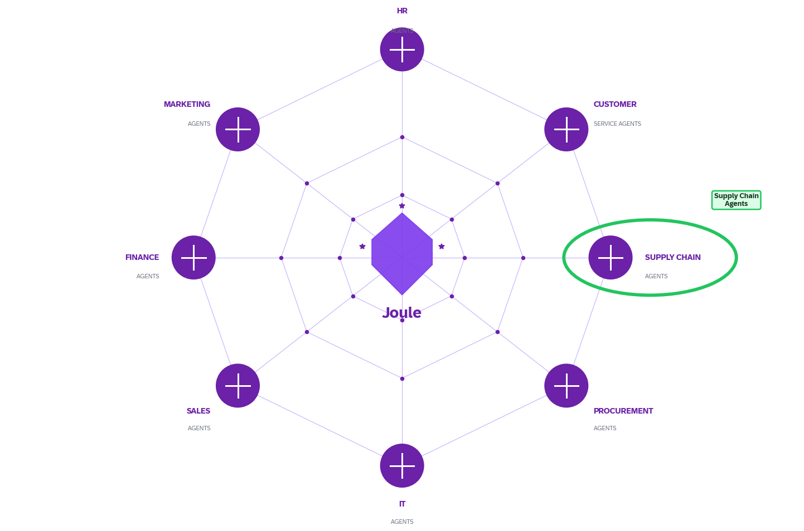

![SAP Logo]() SAP Integrated Business Planning
SAP Integrated Business Planning
SAP Integrated Business Planning
SAP Integrated Business Planning
Mit Datentransparenz und KI zur nachhaltigen & resilienten Lieferkette mit Verantwortungsbewusstsein
IBP ist in der Handhabung deutlich flexibler. Bei APO ist das Vornehmen von Änderungen am Planungsbereich oder das Hinzufügen von Merkmalen mit erheblichem Aufwand verbunden und erweist sich für einige unserer Unternehmensbereiche oft als zu kostenintensiv. Mit IBP hat sich die Möglichkeit, bei Hierarchien, Attributen und weiteren Dimensionen flexibler zu agieren, als ein entscheidender Mehrwert erwiesen.“
Über die Lösung
Durch Naturkatastrophen, geopolitische Konflikte oder plötzliche Nachfrageschwankungen sind Lieferkettenstörungen heute die Realität. SAP Integrated Business Planning (IBP) stärkt Ihre Lieferkette nachhaltig und hilft Ihnen, diesen Herausforderungen proaktiv zu begegnen.
SAP IBP ist Ihre cloudbasierte Lösung für die Supply-Chain-Planung, die sich Ihrem Unternehmenswachstum flexibel anpasst. Sie umfasst alle wichtigsten Aspekte des Planungsprozesses und erweitert diese um KI-gestützte Analysen sowie automatisierte Entscheidungsunterstützung.
Mit SAP IBP schaffen Sie die Grundlage für ein modernes Sales & Operations Planning (S&OP), das Strategie, operative Planung und finanzielle Ziele miteinander verbindet – in Echtzeit und über alle Funktionen hinweg.
Migrationspfad
Die folgende Übersicht zeigt, wie die Kernfunktionen von SAP APO in SAP IBP überführt werden – klar strukturiert, netzwerkzentriert und cloud-nativ für eine nachhaltige Zukunft Ihrer Supply Chain.
SAP APO – wird schrittweise abgekündigt
SAP IBP – Innovativ, KI-gestützt, Cloud-nativ
Strategische Ausrichtung
Digitalisieren und vernetzen Sie Ihre Lieferkette, um Ihr Unternehmen zu stärken und nachhaltiger, schneller sowie intelligenter auf Veränderungen zu reagieren.
Kundenerfahrung und Demand Sensing fließen in die Prognosemodellierung ein – für höhere Servicelevel, mehr Reaktionsfähigkeit und bessere Prognosegenauigkeit.
Synchronisierung von Planungsprozessen auf strategischer, taktischer und operativer Ebene – bis hin zur Produktions- und Transportplanung über das gesamte Unternehmen und die Handelspartner hinweg.
Modernste Planungsmethoden für nachfragegetriebene, gewinnoptimierte und selbstlernende Lieferketten – für schnellere Entscheidungen und mehr Automatisierung.
Vollständige Sichtbarkeit über die gesamte Lieferkette – von der Beschaffung über die Produktion bis zur Auslieferung – um Auswirkungen zu verstehen und Anpassungen rechtzeitig vorzunehmen.
Messbare Ergebnisse
Durch die Integration von S&OP, Echtzeitdaten und KI gewinnen Prozesse an Geschwindigkeit und Nachvollziehbarkeit. Verantwortliche treffen Entscheidungen nicht mehr auf Basis von Annahmen, sondern auf validen Daten.
Funktionen
Nutzen Sie Bedarfsermittlung, statistische Modellierung, Algorithmen für maschinelles Lernen und KI, um genaue kurz- bis langfristige Prognosen zu erstellen.
Synchronisieren Sie Nachfrage, Angebot, Finanzen und Geschäftsziele in einem durchgängigen Planungsprozess.
Arbeiten Sie an abteilungsübergreifenden Plänen und mit Handelspartnern zusammen, um Bestände, Servicelevel und Rentabilität auszugleichen.
Legen Sie Bestandsziele fest, um den Gewinn zu maximieren, und lassen Sie gleichzeitig einen Puffer, um unerwartete Nachfrage zu befriedigen.
Optimieren Sie das Liefermanagement mit Plänen, die auf priorisierten Anforderungen, Zuweisungen und Einschränkungen basieren.
Integrierte Planung und Ausführung, um bei Lieferengpässen den richtigen Bestand dem richtigen Bedarf zuzuordnen und die Lieferung an wichtige Kunden zu beschleunigen.
Künstliche Intelligenz
SAP Business AI integriert fortschrittliche KI in Ihre gesamte Lieferkette, um erheblichen Geschäftswert und operative Exzellenz zu erzielen. Dies ermöglicht es, lokale Geschäftsentscheidungen an einen breiteren, netzwerkbasierten Kontext anzupassen und funktionsübergreifende Intelligenz einzubetten.
Zusätzlich erhalten Sie intelligente Einblicke und Empfehlungen direkt von Joule, SAPs KI-Copilot, innerhalb Ihrer SAP Supply Chain Management-Lösungen.

SAP Business Suite ist ein vollständig integriertes, modulares Lösungspaket, das alle Unternehmensfunktionen nahtlos miteinander verknüpft und optimiert. Durch die Integration von KI, Daten und Anwendungen in einem zentralen System entsteht ein fortlaufender Wertschöpfungskreislauf, der die Transformation Ihres Supply Chain Managements und Unternehmens vorantreibt.
Weiterbildung & Events
Vertiefen Sie Ihr Wissen rund um KI, S&OP und nachhaltige Supply Chains in unserer Plan-Ahead-Serie. Experten aus Industrie und SAP teilen praxisnahe Einblicke und Best Practices für Ihre APO-zu-IBP-Migration.
Zur Plan-Ahead-Serie anmelden →Referenzen
Entdecken Sie, wie führende Unternehmen ihre Lieferkette mit SAP IBP transformiert haben.
Analysten & Marktanerkennung
Schauen Sie sich die Bewertungen rund um SAP IBP an – von führenden Analysten und unabhängigen Nutzern weltweit.
SAP IBP wurde von Gartner als führend im Bereich Supply Chain Planning-Lösungen positioniert – anerkannt für Vollständigkeit der Vision und Umsetzungsfähigkeit.
SAP IBP ist ideal für Unternehmen mit mehreren Standorten und synchronisiert Finanz- und Betriebsdaten, um die Entscheidungsfindung zu verbessern und Kosten zu senken.